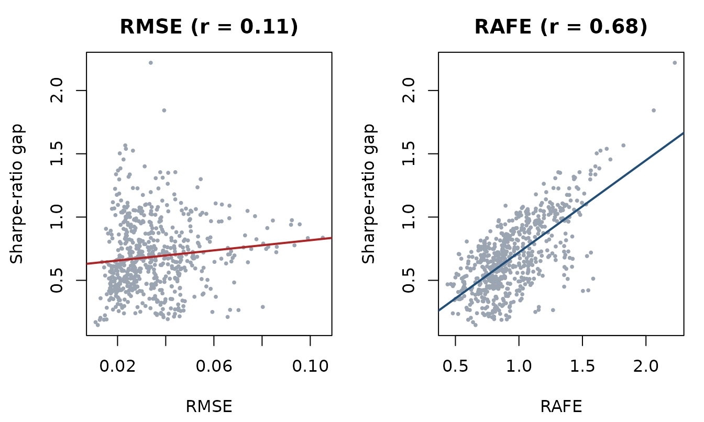
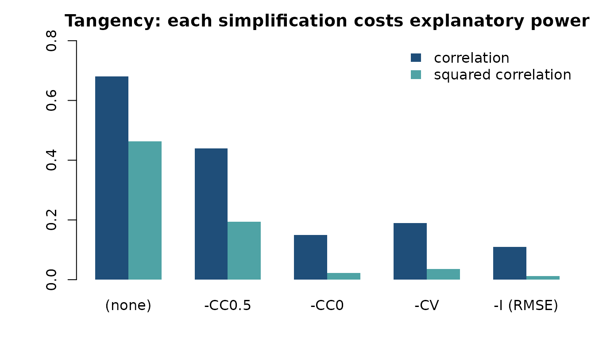
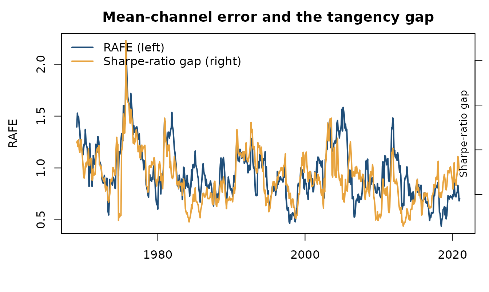

1. Evaluating forecasts: reproducing the published results
Source:vignettes/rafe-evaluation.Rmd
rafe-evaluation.RmdThis vignette reproduces the empirical results of Salcher, Stöckl & Hanke (2026, Journal of Forecasting), Section 6, using only functions from this package, and checks them against the published tables.
The claim being tested
A forecast is scored with root mean squared error. A portfolio is scored by its Sharpe ratio. If the first were a good proxy for the second, forecasts with lower RMSE would produce portfolios closer to the best attainable Sharpe ratio.
The paper’s argument is that RMSE is what remains after almost all the risk information has been stripped out of a sound error measure. Starting from RAFE and imposing progressively cruder assumptions on the covariance gives a nested sequence ending at RMSE:
| Restriction | Covariance used to weight the error |
|---|---|
"none" |
the realised covariance — full RAFE |
"cc05" |
variances kept, all correlations set to |
"cc0" |
variances kept, all correlations set to |
"cv" |
correlations , all variances set to the average variance |
"i" |
the identity — this is RMSE |
restrict_cov() performs the restriction; every metric
takes a variant:
S <- stats::cov(as.matrix(ff12[1:120, 2:6]))
round(stats::cov2cor(restrict_cov(S, "cc05")), 2)
#> [,1] [,2] [,3] [,4] [,5]
#> [1,] 1.0 0.5 0.5 0.5 0.5
#> [2,] 0.5 1.0 0.5 0.5 0.5
#> [3,] 0.5 0.5 1.0 0.5 0.5
#> [4,] 0.5 0.5 0.5 1.0 0.5
#> [5,] 0.5 0.5 0.5 0.5 1.0The design
Monthly excess returns on the 12 Fama-French industry portfolios, January 1964 to December 2023. Rolling 60-month estimation windows and the following 36-month evaluation windows, stepping one month. Training moments are the forecast; realised moments of the test window are the truth.
R <- as.matrix(ff12[, -1])
train_len <- 60L; test_len <- 36L
dates <- ff12$date
c(months = nrow(R), assets = ncol(R),
windows = nrow(R) - train_len - test_len + 1L)
#> months assets windows
#> 720 12 625Weights use a ridge-shrunk covariance inverse; the tangency portfolio is normalised to full investment.
ridge_inverse <- function(Rw, alpha = 0.20) {
S <- stats::cov(Rw)
Ss <- (1 - alpha) * S + alpha * diag(diag(S))
ev <- eigen(Ss, symmetric = TRUE, only.values = TRUE)$values
if (min(ev) < 1e-6) Ss <- Ss + diag(abs(min(ev)) + 1e-4, ncol(Ss))
solve(Ss)
}
budget <- function(w) w / sum(w)
sharpe <- function(w, R_test) { r <- drop(R_test %*% w); mean(r) / stats::sd(r) }The rolling evaluation
Two strategies: the tangency portfolio, which needs both moments, and the global minimum-variance portfolio, which needs only the covariance. Keep that difference in mind — it becomes the point later.
variants <- c("none", "cc05", "cc0", "cv", "i")
starts <- seq_len(nrow(R) - train_len - test_len + 1L)
ones <- rep(1, ncol(R))
panel <- do.call(rbind, lapply(starts, function(s) {
tr <- R[s:(s + train_len - 1L), ]
te <- R[(s + train_len):(s + train_len + test_len - 1L), ]
mu_hat <- colMeans(tr)
Sigma_hat <- stats::cov(tr)
Sigma_w_inv <- ridge_inverse(tr)
mu <- colMeans(te); Sigma <- stats::cov(te); Sigma_inv <- solve(Sigma)
sr_tan <- sharpe(budget(drop(Sigma_w_inv %*% mu_hat)), te)
sr_gmv <- sharpe(budget(drop(Sigma_w_inv %*% ones)), te)
or_tan <- sqrt(drop(t(mu) %*% Sigma_inv %*% mu)) # perfect foresight
or_gmv <- sharpe(budget(drop(Sigma_inv %*% ones)), te)
c(vapply(variants, function(v) compute_rafe(mu_hat, mu, Sigma, variant = v),
numeric(1)),
setNames(vapply(variants, function(v) as.numeric(
compute_trafe(mu_hat, mu, Sigma, Sigma_hat, variant = v, SR_star = or_tan)),
numeric(1)), paste0("T_", variants)),
setNames(vapply(variants, function(v) as.numeric(
compute_trafe(mu_hat, mu, Sigma, Sigma_hat, variant = v, SR_star = or_gmv)),
numeric(1)), paste0("G_", variants)),
crafe = compute_crafe(Sigma, Sigma_hat),
sr_tan = sr_tan, sr_gmv = sr_gmv, or_tan = or_tan, or_gmv = or_gmv,
gap_tan = or_tan - sr_tan, gap_gmv = or_gmv - sr_gmv)
}))
panel <- as.data.frame(panel)
panel$date <- dates[starts + train_len]
nrow(panel)
#> [1] 625What the portfolios actually earned
Before any metric, the raw economics. Monthly Sharpe ratios, averaged over the 625 evaluation windows:
data.frame(
strategy = c("Tangency", "Global minimum variance"),
realised = c(mean(panel$sr_tan), mean(panel$sr_gmv)),
perfect_foresight = c(mean(panel$or_tan), mean(panel$or_gmv)),
gap = c(mean(panel$gap_tan), mean(panel$gap_gmv))
)
#> strategy realised perfect_foresight gap
#> 1 Tangency 0.07074 0.7563 0.6856
#> 2 Global minimum variance 0.18391 0.2677 0.0838The tangency portfolio gives up far more than the minimum-variance portfolio: it needs a mean forecast, and means are hard. GMV needs only a covariance, and loses much less. The gap is what the metrics are trying to predict.
Table 4, Panel A
cor_rafe <- function(gap) vapply(variants, function(v) cor(panel[[v]], gap),
numeric(1))
tan <- round(cor_rafe(panel$gap_tan), 3)
gmv <- round(cor_rafe(panel$gap_gmv), 3)
published_4a <- c(0.680, 0.440, 0.149, 0.190, 0.110)
published_4a_gmv <- c(0.065, 0.126, 0.049, 0.041, 0.020)
data.frame(
metric = c("(none)", "-CC0.5", "-CC0", "-CV", "-I (RMSE)"),
tan_package = unname(tan), tan_published = published_4a,
gmv_package = unname(gmv), gmv_published = published_4a_gmv
)
#> metric tan_package tan_published gmv_package gmv_published
#> 1 (none) 0.680 0.680 0.065 0.065
#> 2 -CC0.5 0.440 0.440 0.126 0.126
#> 3 -CC0 0.149 0.149 0.049 0.049
#> 4 -CV 0.190 0.190 0.041 0.041
#> 5 -I (RMSE) 0.110 0.110 0.020 0.020Every entry matches to the three decimals the paper reports. Panel B of the same table is the squared correlation:
data.frame(metric = c("(none)", "-CC0.5", "-CC0", "-CV", "-I (RMSE)"),
r2_package = round(unname(tan)^2, 3),
r2_published = c(0.462, 0.194, 0.022, 0.036, 0.012))
#> metric r2_package r2_published
#> 1 (none) 0.462 0.462
#> 2 -CC0.5 0.194 0.194
#> 3 -CC0 0.022 0.022
#> 4 -CV 0.036 0.036
#> 5 -I (RMSE) 0.012 0.012For the tangency portfolio, the full RAFE explains 46% of the variation in the Sharpe-ratio gap. RMSE explains 1%.
op <- par(mfrow = c(1, 2), mar = c(4.3, 4.3, 2.6, 1))
plot(panel$i, panel$gap_tan, pch = 19, cex = 0.4, col = "#9AA5B1",
xlab = "RMSE", ylab = "Sharpe-ratio gap", main = "RMSE (r = 0.11)")
abline(lm(gap_tan ~ i, panel), col = "firebrick", lwd = 2)
plot(panel$none, panel$gap_tan, pch = 19, cex = 0.4, col = "#9AA5B1",
xlab = "RAFE", ylab = "Sharpe-ratio gap", main = "RAFE (r = 0.68)")
abline(lm(gap_tan ~ none, panel), col = "#1f4e79", lwd = 2)
par(op)
op <- par(mar = c(4.5, 4.5, 2.4, 1))
barplot(rbind(unname(tan), unname(tan)^2), beside = TRUE,
names.arg = c("(none)", "-CC0.5", "-CC0", "-CV", "-I (RMSE)"),
col = c("#1f4e79", "#4FA3A5"), border = NA, ylim = c(0, 0.8),
ylab = "", main = "Tangency: each simplification costs explanatory power")
legend("topright", c("correlation", "squared correlation"), bty = "n",
fill = c("#1f4e79", "#4FA3A5"), border = NA)
par(op)Table 5: what the covariance channel adds
T-RAFE adds
to RAFE. Table 5 reports how much that addition changes the correlation
with the gap. compute_trafe() takes the strategy’s own
perfect-foresight Sharpe ratio through SR_star:
delta_cor <- function(prefix, gap) {
vapply(variants, function(v) cor(panel[[paste0(prefix, v)]], gap), numeric(1)) -
cor_rafe(gap)
}
data.frame(
metric = c("(none)", "-CC0.5", "-CC0", "-CV", "-I (RMSE)"),
tan_package = round(unname(delta_cor("T_", panel$gap_tan)), 3),
tan_published = c(-0.593, -0.349, -0.066, -0.124, 0.115),
gmv_package = round(unname(delta_cor("G_", panel$gap_gmv)), 3),
gmv_published = c(0.561, 0.490, 0.562, 0.572, 0.598)
)
#> metric tan_package tan_published gmv_package gmv_published
#> 1 (none) -0.593 -0.593 0.561 0.561
#> 2 -CC0.5 -0.349 -0.349 0.490 0.490
#> 3 -CC0 -0.066 -0.066 0.562 0.562
#> 4 -CV -0.124 -0.124 0.572 0.572
#> 5 -I (RMSE) 0.115 0.115 0.598 0.598Matched again, and the pattern is the interesting part. Adding the covariance channel hurts for the tangency portfolio () and helps substantially for minimum variance ().
That is exactly what the decomposition predicts. The tangency gap is driven by the mean forecast, so loading a covariance term on top only adds noise. The GMV portfolio never sees a mean at all, so its gap is a covariance problem, and the covariance channel is what explains it. Each channel accounts for the strategy that depends on it — which is the practical case for reporting the decomposition rather than a single number.
The two channels through time
op <- par(mar = c(4.2, 4.4, 2.4, 1))
plot(panel$date, panel$none, type = "l", lwd = 2, col = "#1f4e79",
xlab = "", ylab = "RAFE", main = "Mean-channel error and the tangency gap")
par(new = TRUE)
plot(panel$date, panel$gap_tan, type = "l", lwd = 2, col = "#E8A33D",
axes = FALSE, xlab = "", ylab = "")
axis(4); mtext("Sharpe-ratio gap", side = 4, line = -1.4, cex = 0.9)
legend("topleft", c("RAFE (left)", "Sharpe-ratio gap (right)"), bty = "n",
lwd = 2, col = c("#1f4e79", "#E8A33D"))
par(op)The two series move together — which is the whole point, and what the 0.68 correlation measures.
The published analysis covers 13 portfolio strategies and a 100,000-path Monte Carlo alongside these empirical results; the replication code is at github.com/sstoeckl/Lost_in_Translation_Replication. This vignette reproduces two strategies to keep the build fast.